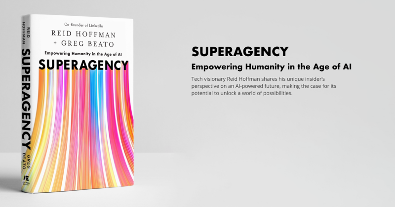

Chapter 3: What Could Possibly Go Right
This is part 2 of my review of Reid Hoffman and Greg Beato’s Superagency. Pages 48-94 cover Chapter 3, titled “What Could Possibly Go Right”—a deliberate play on words. Instead of the usual “what could go wrong,” Hoffman and Beato flip the framing to emphasize opportunity over risk.
This chapter introduces two competing worldviews: solutionism (the tech optimist’s belief that complex problems have technological fixes) and problemism (which Hoffman frames as the gloomer’s default mode of focusing on risks and downsides).
Let me break down why this framing is more complicated than the book presents it.

Superagency by Reid Hoffman and Greg Beato
Solutionism: Technology as the Answer
Hoffman defines solutionism as the belief that the world’s most vexing challenges have technological fixes. AI, in this view, is one of the most proven levers for creating change at scale.
To What Extent Is This True?
The book argues that technology has consistently solved major human problems: vaccines eradicated diseases, the internet democratized information, smartphones connected billions of people.
This is partially true. Technology has solved specific, well-defined problems. But “the world’s most vexing challenges” are rarely technical problems—they’re social, political, and economic problems that happen to have technical components.
Consider climate change. We have the technology to transition to renewable energy. The “vexing challenge” isn’t the technology—it’s coordinating global political will, managing economic transitions, and overcoming entrenched interests. No AI breakthrough solves those problems.
The Question of Scale
Hoffman emphasizes that technology creates change “at scale.” This is true—technology can reach millions or billions of people quickly.
But here’s the critical question the book doesn’t adequately address: Are the positives of technology distributed evenly at scale?
The internet connected billions of people, but: - Who profited most? Tech companies and early adopters in wealthy countries - Who bears the costs? Workers displaced by automation, communities disrupted by platform economies, users whose data is monetized - Who gets left behind? People without access, those who can’t afford devices, communities where infrastructure wasn’t built
Solutionism tends to measure success by aggregate impact while ignoring distributional questions. “We connected 3 billion people” sounds impressive, but if those 3 billion are predominantly in wealthy countries while the other 4 billion remain disconnected, that’s not universal progress.
Is Technology Really the Most Proven Lever?
The book asserts that technology is among “the most proven levers for creating change.” But proven in what sense?
Social movements, policy changes, and institutional reforms have also created massive change at scale: - Civil rights legislation transformed society - Public health systems eradicated diseases (often more than vaccines alone) - Labor organizing improved working conditions - Democratic reforms expanded political participation
These weren’t primarily technological solutions. They were social and political solutions that sometimes used technology as a tool.
The solutionist framing centers technology as the primary driver of progress, which minimizes the role of human organization, policy, and collective action.
Problemism: The Gloomer’s Worldview
Hoffman introduces problemism as the default mode of skeptics (gloomers like me). Problemists focus on what could go wrong, potential harms, and unintended consequences.
The chapter frames problemism as: - An obstacle to progress - Overly cautious and risk-averse - Focused on negatives at the expense of recognizing benefits
Is This Scapegoating?
There’s something convenient about positioning skeptics as the problem. If gloomers are just pessimists who can’t see opportunities, then their concerns can be dismissed as psychological rather than substantive.
But “problemism” isn’t just pessimism—it’s pattern recognition based on history. Every major technological revolution has produced: - Massive distributional inequalities - Unintended harmful consequences - Power concentration among early adopters - Disruption of existing social structures
Pointing out these patterns isn’t holding progress back. It’s asking: “Given what we know about past technological disruptions, how can we avoid repeating the same mistakes?”
Has Big Tech Only Created Progress?
The book frames problemists as entities “holding progress back.” But this assumes that what Big Tech calls “progress” is universally beneficial.
Consider social media—a technology that Big Tech champions as connecting humanity: - Positive: Enabled global communication, grassroots organizing, democratized content creation - Negative: Amplified misinformation, enabled surveillance capitalism, contributed to mental health crises, facilitated political manipulation
Did social media create progress? For some people, yes. For others, it created new problems. Calling skeptics “problemists” for pointing out the downsides doesn’t make those downsides disappear—it just silences legitimate critique.
Unrestrained Innovation vs. Thoughtful Innovation
The book frames problemism as harmful to society because it slows down innovation. But here’s the question: Isn’t stepping back and rethinking innovation, rather than pursuing unrestrained innovation, ultimately good?
We’ve learned from history that “move fast and break things” causes real harm: - Facebook’s rapid expansion broke democratic discourse - Uber’s disruption broke labor protections - Cryptocurrency’s innovation broke financial stability for many who invested
“Problemism”—if we’re calling it that—is the practice of asking “should we?” before “can we?” That’s not holding progress back. That’s responsible innovation.
According to research on responsible AI development, incorporating critical perspectives early in development leads to better outcomes than addressing harms reactively after deployment. “Problemism” is just another term for proactive risk assessment.
The Kokobot Example: When Problemism Was Right
Hoffman discusses Kokobot, an AI mental health chatbot that faced significant backlash. The book presents this as an example of how problemism stifles innovation in mental health.
But let’s look at what actually happened with Kokobot and similar AI mental health tools.
The Challenges
Critics raised concerns about: - Safety: Could an AI chatbot adequately handle users in crisis? - Privacy: Was user mental health data being properly protected? - Effectiveness: Did these tools actually help, or just provide the appearance of help? - Replacement of human care: Would employers use cheap chatbots instead of providing actual mental health benefits?
These weren’t hypothetical concerns. Studies showed that: - Some mental health chatbots gave harmful advice during crisis situations - User data from mental health apps was sold to advertisers - Many users reported the chatbots felt impersonal and unhelpful - Companies did use chatbots as cheaper alternatives to human therapists
The Opportunities
Hoffman argues that despite these concerns, AI mental health tools offer opportunities: - Accessible mental health support for underserved populations - 24/7 availability for people in crisis - Reduced stigma through anonymous digital interfaces - Scalable support that human therapists alone can’t provide
These are real benefits. But here’s where solutionism and problemism diverge:
Solutionist view: The technology has benefits, so we should deploy it widely and fix problems as they arise.
Problemist view: The technology has serious risks, so we should address those risks before wide deployment.
Who Was Right?
In the case of Kokobot and similar tools, the “problemists” were vindicated. Multiple mental health chatbots: - Failed to detect suicidal ideation - Gave inappropriate advice - Violated user privacy - Created false sense of receiving adequate care
The backlash wasn’t people being pessimistic—it was people recognizing that mental health is high-stakes, and deploying untested AI tools in that domain was reckless.
Hoffman frames this as problemism holding back progress. I’d frame it as problemism preventing harm.
The False Dichotomy
The biggest issue with this chapter is how it sets up solutionism vs. problemism as opposing worldviews, with solutionism positioned as forward-thinking and problemism as regressive.
This is a false dichotomy.
You Can Believe Both
It’s possible to believe: - Technology can solve important problems AND - Technology creates serious risks that need careful management
It’s possible to be: - Excited about AI’s potential AND - Concerned about its misuse
The productive position isn’t pure solutionism or pure problemism—it’s conditional optimism: being optimistic about technology’s potential while insisting on safeguards, accountability, and equitable distribution of benefits.
The Rhetorical Strategy
By framing critics as “problemists,” Hoffman creates a rhetorical strategy where: - Skepticism = pessimism = obstruction - Optimism = innovation = progress
This shuts down legitimate critique by making it seem like an attitude problem rather than a substantive concern.
But asking hard questions isn’t pessimism. It’s due diligence.
What This Chapter Misses
The chapter doesn’t adequately address: - Power dynamics: Who controls AI development and who benefits? - Historical patterns: Why should we expect AI to be different from past technologies in terms of distributional inequity? - Alternative approaches: Could we pursue AI development with built-in safeguards rather than the “deploy first, fix later” model? - The cost of being wrong: If solutionists are wrong and AI causes serious harm, what’s the cost? If problemists are wrong and we move slower than necessary, what’s the cost?
Asymmetric risk matters. The cost of deploying harmful AI is potentially much higher than the cost of taking extra time to get it right.
My Take: Problemism Is Pattern Recognition
After reading Chapter 3, I’m more convinced that “problemism”—if we’re calling it that—is necessary and valuable.
It’s not pessimism. It’s pattern recognition based on history: - The Industrial Revolution increased productivity but created brutal working conditions - Social media connected people but amplified misinformation and surveillance - The internet democratized information but enabled new forms of manipulation
Every time, the solutionists said “the benefits outweigh the risks, let’s move fast.” Every time, the problemists said “wait, let’s think about the downsides.” And every time, we later discovered the problemists were identifying real issues that should have been addressed earlier.
Hoffman positions problemism as holding society back. I’d argue problemism is the only thing preventing us from repeating the same mistakes at an accelerated pace.
What Good Problemism Looks Like
Productive skepticism isn’t just saying “AI bad.” It’s asking: - Who benefits from this technology and who bears the costs? - What safeguards prevent misuse? - How do we ensure benefits are distributed equitably? - What happens if this goes wrong, and how do we mitigate that? - What can we learn from past technological transitions?
These questions don’t stop innovation. They guide innovation toward better outcomes.
The Real Question
The chapter asks: “What could possibly go right?”
But the more important question is: “For whom will things go right, and at whose expense?”
Solutionism assumes universal benefit. Problemism asks about distribution. And history suggests the problemists are asking the right question.
I’ll keep reading, but so far, Superagency is making the case for optimism without adequately addressing why past optimism about technology has often proven naive.
Up Next
Review #3 will cover pages 95-141. I’m curious to see if the book addresses distributional concerns more seriously, or if it continues positioning skepticism as the primary obstacle to AI progress.
Stay tuned.